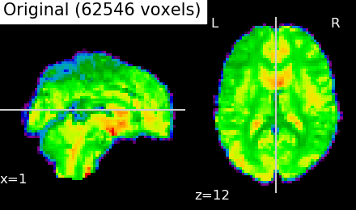
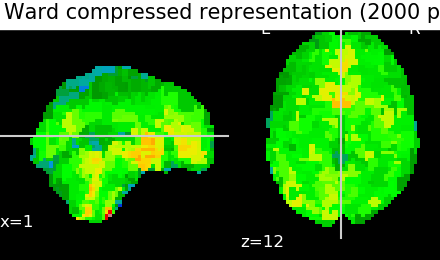

Note
Click here to download the full example code
8.4.12. Clustering methods to learn a brain parcellation from rest fMRI¶
We use spatially-constrained Ward-clustering and KMeans to create a set of parcels.
In a high dimensional regime, these methods can be interesting to create a ‘compressed’ representation of the data, replacing the data in the fMRI images by mean signals on the parcellation, which can subsequently be used for statistical analysis or machine learning.
Also, these methods can be used to learn functional connectomes and subsequently for classification tasks.
8.4.12.1. References¶
Which clustering method to use, an empirical comparison can be found in this paper
- Bertrand Thirion, Gael Varoquaux, Elvis Dohmatob, Jean-Baptiste Poline. Which fMRI clustering gives good brain parcellations ? Frontiers in Neuroscience, 2014.
This parcellation may be useful in a supervised learning, see for instance
- Vincent Michel, Alexandre Gramfort, Gael Varoquaux, Evelyn Eger, Christine Keribin, Bertrand Thirion. A supervised clustering approach for fMRI-based inference of brain states.. Pattern Recognition, Elsevier, 2011.
The big picture discussion corresponding to this example can be found in the documentation section Clustering to parcellate the brain in regions.
8.4.12.2. Download a rest dataset and turn it to a data matrix¶
We download one subject of the ADHD dataset from Internet
from nilearn import datasets
dataset = datasets.fetch_adhd(n_subjects=1)
# print basic information on the dataset
print('First subject functional nifti image (4D) is at: %s' %
dataset.func[0]) # 4D data
Out:
First subject functional nifti image (4D) is at: /home/kshitij/nilearn_data/adhd/data/0010042/0010042_rest_tshift_RPI_voreg_mni.nii.gz
8.4.12.3. Brain parcellations with Ward Clustering¶
Transforming list of images to data matrix and build brain parcellations, all can be done at once using Parcellations object.
from nilearn.regions import Parcellations
# Computing ward for the first time, will be long... This can be seen by
# measuring using time
import time
start = time.time()
# Agglomerative Clustering: ward
# We build parameters of our own for this object. Parameters related to
# masking, caching and defining number of clusters and specific parcellations
# method.
ward = Parcellations(method='ward', n_parcels=1000,
standardize=False, smoothing_fwhm=2.,
memory='nilearn_cache', memory_level=1,
verbose=1)
# Call fit on functional dataset: single subject (less samples).
ward.fit(dataset.func)
print("Ward agglomeration 1000 clusters: %.2fs" % (time.time() - start))
# We compute now ward clustering with 2000 clusters and compare
# time with 1000 clusters. To see the benefits of caching for second time.
# We initialize class again with n_parcels=2000 this time.
start = time.time()
ward = Parcellations(method='ward', n_parcels=2000,
standardize=False, smoothing_fwhm=2.,
memory='nilearn_cache', memory_level=1,
verbose=1)
ward.fit(dataset.func)
print("Ward agglomeration 2000 clusters: %.2fs" % (time.time() - start))
Out:
[MultiNiftiMasker.fit] Loading data from [/home/kshitij/nilearn_data/adhd/data/0010042/0010042_rest_tshift_RPI_voreg_mni.nii.gz]
[MultiNiftiMasker.fit] Computing mask
[MultiNiftiMasker.transform] Resampling mask
[Parcellations] Loading data
[MultiNiftiMasker.transform_single_imgs] Loading data from Nifti1Image('/home/kshitij/nilearn_data/adhd/data/0010042/0010042_rest_tshift_RPI_voreg_mni.nii.gz')
[MultiNiftiMasker.transform_single_imgs] Smoothing images
[MultiNiftiMasker.transform_single_imgs] Extracting region signals
[MultiNiftiMasker.transform_single_imgs] Cleaning extracted signals
[Parcellations] computing ward
________________________________________________________________________________
[Memory] Calling nilearn.regions.parcellations._estimator_fit...
_estimator_fit(array([[ 0.000374, ..., -0.002291],
...,
[ 0.003826, ..., 0.003085]], dtype=float32),
AgglomerativeClustering(affinity='euclidean', compute_full_tree='auto',
connectivity=<62546x62546 sparse matrix of type '<class 'numpy.int64'>'
with 423954 stored elements in COOrdinate format>,
linkage='ward', memory=Memory(location=nilearn_cache/joblib),
n_clusters=1000, pooling_func='deprecated'))
________________________________________________________________________________
[Memory] Calling sklearn.cluster.hierarchical.ward_tree...
ward_tree(array([[ 0.000374, ..., 0.003826],
...,
[-0.002291, ..., 0.003085]], dtype=float32),
<62546x62546 sparse matrix of type '<class 'numpy.int64'>'
with 423954 stored elements in COOrdinate format>, n_clusters=None)
________________________________________________________ward_tree - 7.3s, 0.1min
____________________________________________________estimator_fit - 7.6s, 0.1min
Ward agglomeration 1000 clusters: 13.15s
[MultiNiftiMasker.fit] Loading data from [/home/kshitij/nilearn_data/adhd/data/0010042/0010042_rest_tshift_RPI_voreg_mni.nii.gz]
[MultiNiftiMasker.fit] Computing mask
[MultiNiftiMasker.transform] Resampling mask
[Parcellations] Loading data
[Parcellations] computing ward
________________________________________________________________________________
[Memory] Calling nilearn.regions.parcellations._estimator_fit...
_estimator_fit(array([[ 0.000374, ..., -0.002291],
...,
[ 0.003826, ..., 0.003085]], dtype=float32),
AgglomerativeClustering(affinity='euclidean', compute_full_tree='auto',
connectivity=<62546x62546 sparse matrix of type '<class 'numpy.int64'>'
with 423954 stored elements in COOrdinate format>,
linkage='ward', memory=Memory(location=nilearn_cache/joblib),
n_clusters=2000, pooling_func='deprecated'))
________________________________________________________________________________
[Memory] Calling sklearn.cluster.hierarchical.ward_tree...
ward_tree(array([[ 0.000374, ..., 0.003826],
...,
[-0.002291, ..., 0.003085]], dtype=float32),
<62546x62546 sparse matrix of type '<class 'numpy.int64'>'
with 423954 stored elements in COOrdinate format>, n_clusters=2000)
________________________________________________________ward_tree - 7.3s, 0.1min
____________________________________________________estimator_fit - 7.6s, 0.1min
Ward agglomeration 2000 clusters: 9.70s
8.4.12.4. Visualize: Brain parcellations (Ward)¶
First, we display the parcellations of the brain image stored in attribute labels_img_
ward_labels_img = ward.labels_img_
# Now, ward_labels_img are Nifti1Image object, it can be saved to file
# with the following code:
ward_labels_img.to_filename('ward_parcellation.nii.gz')
from nilearn import plotting
from nilearn.image import mean_img, index_img
first_plot = plotting.plot_roi(ward_labels_img, title="Ward parcellation",
display_mode='xz')
# Grab cut coordinates from this plot to use as a common for all plots
cut_coords = first_plot.cut_coords

8.4.12.5. Compressed representation of Ward clustering¶
Second, we illustrate the effect that the clustering has on the signal. We show the original data, and the approximation provided by the clustering by averaging the signal on each parcel.
# Grab number of voxels from attribute mask image (mask_img_).
import numpy as np
original_voxels = np.sum(ward.mask_img_.get_data())
# Compute mean over time on the functional image to use the mean
# image for compressed representation comparisons
mean_func_img = mean_img(dataset.func[0])
# Compute common vmin and vmax
vmin = np.min(mean_func_img.get_data())
vmax = np.max(mean_func_img.get_data())
plotting.plot_epi(mean_func_img, cut_coords=cut_coords,
title='Original (%i voxels)' % original_voxels,
vmax=vmax, vmin=vmin, display_mode='xz')
# A reduced dataset can be created by taking the parcel-level average:
# Note that Parcellation objects with any method have the opportunity to
# use a `transform` call that modifies input features. Here it reduces their
# dimension. Note that we `fit` before calling a `transform` so that average
# signals can be created on the brain parcellations with fit call.
fmri_reduced = ward.transform(dataset.func)
# Display the corresponding data compressed using the parcellation using
# parcels=2000.
fmri_compressed = ward.inverse_transform(fmri_reduced)
plotting.plot_epi(index_img(fmri_compressed, 0),
cut_coords=cut_coords,
title='Ward compressed representation (2000 parcels)',
vmin=vmin, vmax=vmax, display_mode='xz')
# As you can see below, this approximation is almost good, although there
# are only 2000 parcels, instead of the original 60000 voxels
- 
- 
Out:
[Parcellations.transform] loading data from Nifti1Image('ward_parcellation.nii.gz')
[Parcellations.transform] loading data from Nifti1Image(
shape=(61, 73, 61),
affine=array([[ -3., -0., -0., 90.],
[ -0., 3., -0., -126.],
[ 0., 0., 3., -72.],
[ 0., 0., 0., 1.]])
)
________________________________________________________________________________
[Memory] Calling nilearn.input_data.base_masker.filter_and_extract...
filter_and_extract(<nibabel.nifti1.Nifti1Image object at 0x7f2f0bcbb908>, <nilearn.input_data.nifti_labels_masker._ExtractionFunctor object at 0x7f2f0d5e4cf8>,
{ 'background_label': 0,
'detrend': False,
'dtype': None,
'high_pass': None,
'labels_img': <nibabel.nifti1.Nifti1Image object at 0x7f2f0d5e4828>,
'low_pass': None,
'mask_img': <nibabel.nifti1.Nifti1Image object at 0x7f2f0d5e4240>,
'smoothing_fwhm': 2.0,
'standardize': False,
't_r': None,
'target_affine': None,
'target_shape': None}, confounds=None, dtype=None, memory=Memory(location=nilearn_cache/joblib), memory_level=1, verbose=1)
[NiftiLabelsMasker.transform_single_imgs] Loading data from Nifti1Image('/home/kshitij/nilearn_data/adhd/data/0010042/0010042_rest_tshift_RPI_voreg_mni.nii.gz')
[NiftiLabelsMasker.transform_single_imgs] Smoothing images
[NiftiLabelsMasker.transform_single_imgs] Extracting region signals
[NiftiLabelsMasker.transform_single_imgs] Cleaning extracted signals
_______________________________________________filter_and_extract - 3.4s, 0.1min
8.4.12.6. Brain parcellations with KMeans Clustering¶
We use the same approach as with building parcellations using Ward clustering. But, in the range of a small number of clusters, it is most likely that we want to use standardization. Indeed with standardization and smoothing, the clusters will form as regions.
# class/functions can be used here as they are already imported above.
# This object uses method='kmeans' for KMeans clustering with 10mm smoothing
# and standardization ON
kmeans = Parcellations(method='kmeans', n_parcels=50,
standardize=True, smoothing_fwhm=10.,
memory='nilearn_cache', memory_level=1,
verbose=1)
# Call fit on functional dataset: single subject (less samples)
kmeans.fit(dataset.func)
print("KMeans 50 clusters: %.2fs" % (time.time() - start))
Out:
[MultiNiftiMasker.fit] Loading data from [/home/kshitij/nilearn_data/adhd/data/0010042/0010042_rest_tshift_RPI_voreg_mni.nii.gz]
[MultiNiftiMasker.fit] Computing mask
[MultiNiftiMasker.transform] Resampling mask
[Parcellations] Loading data
[MultiNiftiMasker.transform_single_imgs] Loading data from Nifti1Image('/home/kshitij/nilearn_data/adhd/data/0010042/0010042_rest_tshift_RPI_voreg_mni.nii.gz')
[MultiNiftiMasker.transform_single_imgs] Smoothing images
[MultiNiftiMasker.transform_single_imgs] Extracting region signals
[MultiNiftiMasker.transform_single_imgs] Cleaning extracted signals
[Parcellations] computing kmeans
________________________________________________________________________________
[Memory] Calling nilearn.regions.parcellations._estimator_fit...
_estimator_fit(array([[0.003411, ..., 0.002411],
...,
[0.00261 , ..., 0.001337]], dtype=float32),
MiniBatchKMeans(batch_size=100, compute_labels=True, init='k-means++',
init_size=None, max_iter=100, max_no_improvement=10, n_clusters=50,
n_init=3, random_state=0, reassignment_ratio=0.01, tol=0.0,
verbose=0))
____________________________________________________estimator_fit - 0.8s, 0.0min
KMeans 50 clusters: 22.51s
8.4.12.7. Visualize: Brain parcellations (KMeans)¶
Grab parcellations of brain image stored in attribute labels_img_
kmeans_labels_img = kmeans.labels_img_
plotting.plot_roi(kmeans_labels_img, mean_func_img,
title="KMeans parcellation",
display_mode='xz')
# kmeans_labels_img is a Nifti1Image object, it can be saved to file with
# the following code:
kmeans_labels_img.to_filename('kmeans_parcellation.nii.gz')
Finally show them
Total running time of the script: ( 0 minutes 36.189 seconds)